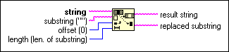
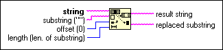

Replace Substring Function
Owning Palette: String Functions
Requires: Base Development System
Inserts, deletes, or replaces a substring at the offset you specify in string.

 Add to the block diagram Add to the block diagram |
 Find on the palette Find on the palette |
Owning Palette: String Functions
Requires: Base Development System
Inserts, deletes, or replaces a substring at the offset you specify in string.

| Add to the block diagram |
Find on the palette |
The Replace Substring function deletes length characters in string starting at offset, and replaces the deleted portion with substring. If length is 0, the Replace Substring function inserts substring at offset. If substring is empty, the Replace Substring function deletes length characters at offset.